Introduction
Global warming and climate change have been topics of national and international discussion for decades. Countless research and academic papers have quantified and solidified the effects that human activity is having on our climate, specifically the average temperature of our planet. However, despite the urgency, it seems less and less likely that the necessary steps to avoid the worst outcomes are going to be taken in the time necessary. Thus, it is important to continue to work to understand as much as we can about our climate and how it is changing. Additionally, it necessary to understand the implications the changing climate will have on our lived environment. This understanding includes the changes to severe weather events such as wilfires, droughts, hurricanes, tornados. It also includes changes to experienced droughts or heavy rain events, the intensity of temperatures during different seasons, especially summer and winter. All of these changes will be materially felt by everyone. Therefore, understanding the impacts that can be expected can assists people in adapting to this changing climate and changing world.
In an effort to provide accurate and useful data in which to conduct historical climate analyses, NOAA generates and provides the Climate Divisional Dataset (nClimDiv). For many years this was the only available long-term temporally and spatially complete dataset (NCEI,NOAA,https://www.ncei.noaa.gov/access/monitoring/dyk/us-climate-divisions). This data plays a crucial role in the study of long term climate trends across the United States. Another crucial aspect is the climate divisions themselves. Without them, analyses would only be able to be conducted on a state-wide or national scale. These divisions allow for more localize climate analysis, which can be more informative and enlightening than larger spatial analyses, especially when considering impacts on agriculture, water management, or disaster planning. The breakdown of climate divisions for the contiguous United States can be seen below in Figure 1.
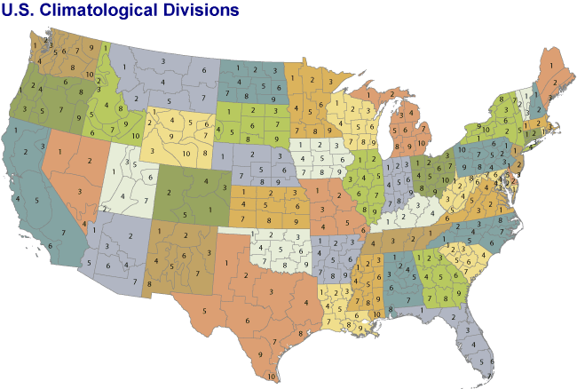These climate divisions were determined by identifying regions with similar climate conditions based on geographical features, vegeation, and weather patterns. Below, in Figure 2, we can see a close up of the climate divisions within Colorado. Colorado consists of 5 different climate divisions. Climate Division 1 consists of the southeastern portion of the state, highlighted in green. Division 2 is the western portion of the state on the windward side of the Rocky Mountains. Division 3 consists of the far eastern plans, highlighted in pink. Division 4 is the northern front range, including cities like Denver, Boulder, and Fort Collins. It is highlighted in maroon. Lastly, Division 5 is the southern central portion of Colorado, which is lightly shaded white. We can observe that for these divisions, the most impactful boundary between them are the topological features of the state. Most of the division boundaries consist of mountainous or elevated terrain.

It stands to reason that due to these differences in climate division, people living within Colorado will experience the effects of climate change differently depending on their region. These differences could include changes in average maximum or minimum temperature or experience of drought or rain events. The impacts of a changing climate are not only seen in climactic conditions. The Intergovernmental Panel on Climate Change and the United States Environmental Protection Agency have both recognized the potential for climate change to impact the air quality that we experience. Differing levels of ozone, fine particulate matter (PM 2.5), coarse particulate matter (PM 10), and gaseous pollutants from human activity such as carbon monoxide (CO), sulphur dioxide (SO2), and nitrogen dioxide (NO2). These last three pollutants are more prevalent in cities due to a higher density of cars and fossil fuel burning. The exploration of the link between climactic conditions and improving or worsening air quality is a topic that deserves more attention and analysis.
With the data provided, the possibilities for interesting and unique insights are plentiful. Thus, ten questions that I hope to be able to answer through my research and investigation are:
- Is there a significant difference in the trend of maximum and minimum temperature change over time between the different climate divsions?
- Is there a significant difference in the amount of precipitation experienced over time by each climate division?
- Is there a significant difference in the occurence and severity of drought experienced by each climate division?
- Is there a significant difference in the number of Heating Degree Days or Cooling Degree Days experienced by each climate division?
- Based on the differences in trends experienced, which climate division will has been most affected by climate change? Which one has been least affected?
- Is there a difference in air quality changes over time depending on the climate division being observed?
- Which climate division has experienced the greatest impact to their air quality? Is this most likely due to climate change or other factors?
- Which climate division has experienced the least impact to their air quality? Why might this be?
- Based on both climate trends and air quality trends, which climate division appears to be the most desirable to live in if climate trends continue?
- What additional research and investigation should be conducted in order to further this anlysis?
Data Preparation & EDA
Climate Data
The climate data collected for this analysis was from the National Oceanic and Atmospheric Administration (NOAA). NOAA maintains and publishes a thorough, temporal, and spatially aligned dataset called the Global Historical Climatology Network (GHCN) Daily dataset. This dataset is the basis for the Climate Divisions datasets, which are being used in this analysis. These datasets are aggregations of the GHCN-Daily. The independent station data is interpolated to grid-point estimates and then area-weighted to determine the recorded value for the climate division. 17 total datasets were downloaded to cover data including temperature, precipitation, heating and cooling degree days, and a variety of drought indexes. A sample of the raw data can be seen below in Figure 3.
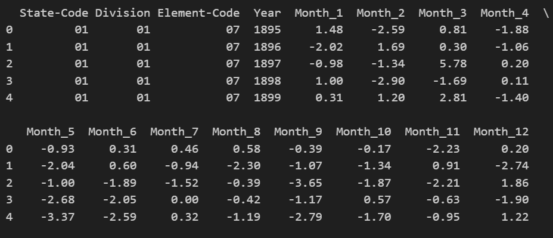As can be seen above, this data is provided in wide format with monthly values for each climate division. Additionally, this data table is only for element code 07, which is the code for the Palmer "Z" Index. Additional data tables for the 16 other variables were also produced in a similar manner. In order to allow for all 17 variable tables to be merged into a singular dataset, each table was converted to a long format with a new column for the values for that variable. The tables were then merged, a new date column was constructed to combine the year and month, and the element code column was removed. The last step was to remove any values that were stand ins for missing or inaccurate data. The documenation noted that missing values for variables would be denoted with -9.99, -99.90, -99.99, or -9999, depending on the variable. These values were dropped and replaced with NaNs. The reasoning for replacing with NaN instead of imputing values was due to the fact that the missing value was mostly likely due to unreported or incorrectly reported data. As discussed earlier, the data in these datasets were interpolated and area-weighted data already. Therefore, it was decided that any attempt at imputing a value for the missing value would just be a re-interpolation or aggregation of data that was already interpolated/aggregated. Without knowing the exact data points that were used to formulate climate division data, any additional interpolation or aggregation could have potentially given undue weight to certain original indepent station observations, skewing the data for the entire division towards that one area. A sample of the final cleaned dataset for the NOAA data can be seen below in Figure 4. The code for the processing and cleaning of the data can be found in the GitHub repository for this project here. The name of the code file is 'NOAA Data Import and Cleaning.ipynb'.
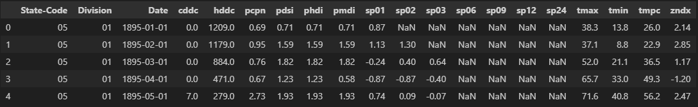AirNow Data
The second part of the dataset for this analysis was collected from AirNow.gov. AirNow is a partnership of the United States Environmental Protection Agency (EPA), NOAA, National Park Service (NPS), NASA, Centers for Disease Control (CDC), and local, state, and tribal air quality agencies. AirNow centralized data system provides quality control, national reporting consistency, and the ability to distrbute data to the public. The AirNow data for this analysis was collected by two different means. The first was through the use of AirNow's Application Programming Interface (API). This API allowed for the download of historical hourly air quality data from 54 different sensor stations across Colorado. Through the use of this API data was downloaded for January 1st, 2024 through July 31st, 2025. The reason for this small time period was due to the massive amount of data included in each day and the rate limit imposed by the API. The API endpoint for this specific data was 'Observations by Monitoring Site'. The documentation for this endpoint can be found on AirNow's website here. The implementation of the API call can be seen below in Figure 5. The GET url was dynamically changed during the code execution which allowed for multiple GET calls to be executed while the code was running. The full code for the API implementation can be found here. The file name for the code is 'AirNow API for Data Acquisition'.
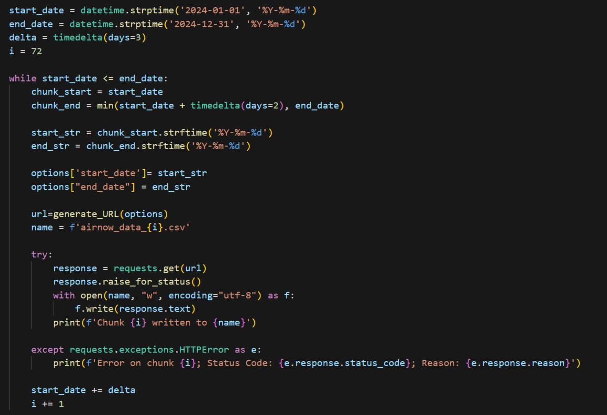 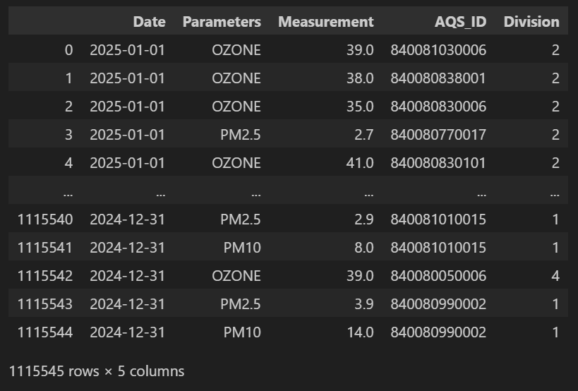The raw AirNow data can be seen above in Figure 6. The data in this raw form was in long format, with all of the different parameters listed in one column and each station having multiple entries depending on which parameter was being recorded. The first thing that was done was to map each staion ID to the climate division that it was located in. This would faciliate aggregating the data up to the climate division level. Next, in order to simplify the data structure, the table was converted to a wide format so that each parameter had its own column. At the same time, values for each parameter were agregated up to the division level. This yielded the final cleaned data structure that can be seen below in Figure 7. This data now had one entry for each climate division for each day of record with the aggregate values for each parameter. The code for this data cleaning can be found here.
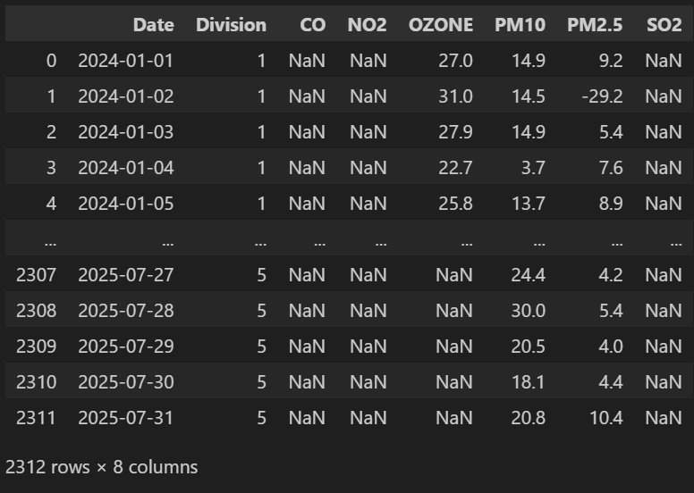Data Exploration and Visualization
Once all of the data was cleaned, it was time to explore the data. This exploration allowed for a better understanding of the data and what potential trends or relationships might be learned from the data. This exploration also highlighted which variables were severely lacking in avaiable data. Those variables will be noted and possibly excluded during future analysis due to their lack of temporal availability in relation to the rest of the data.

The above grid shows a comparison of the maximum temperature for the year from 1895 to 2025 for each climate division. It is interesting to note that each division has a different temperature profile that it oscilates between. However, it appears from visual inspection that each division does have an upward trend in temperature, as would be expected.

The above grid shows a comparison of the average temperature for the year from 1895 to 2025 for each climate division. Similar to the maximum temperature, we can see a clear separation in the temperature variation range depending on climate division.

This graph shows the PDSI value over time. A positive PDSI value means means a wet spell while a negative value indicates a dry spell. The PDSI is used to gauge the severity of dry or wet spell. Over time, it appears as though climate division 4 is spending more time with a PDSI that is negative, indicating an more drought stricken environment.

This graph shows the total value of Heating Degree Days by year, over time. A higher value for a year would indicate colder temperatures on average over the year, implying more heating would be needed to maintain comfortable temperatures inside. The plot suggests a downward trend, meaning less need for heating over the year.

This graph show the total value of Cooling Degree Days by year, over time. A higher value for a year would indicate hotter temperatures on average over the year, implying more cooling would be needed to maintain comfortable temperatures inside. The plot suggests a upward trend, meaning more need for cooling over the year.

This graph shows the Coarse Particulate Matter concentrations (PM10, micrograms per cubic meter) daily readings over time for climate division 4. From initial inspection it does not appear as though any general trend is present within the data. More exploration will be needed to see if any conclusions can be drawn from this data and connected to any climate conclusions.

This graph show the Nitrogen Dioxide concentrations for climate division 4 over time. The graph suggests that the concentrations are both decreased over the entire time period and also have shown less variability. A slight upward trend could potentially be materializing, as observed in the last part of the line graph.

This graph shows the Sulphur Dioxide concentrations for climate division 4 over time. The graph shows that a lot of historical data is missing for these measurements, as indicated by the stretches of line that lie on the zero line for the y-axis. However, concentration measurements seem to have increased in quality in recent times and appear to be showing a strong general upward trend.
Principal Component Analysis (PCA)
Overview
Principal Component Analysis is a mathemtical technique used to reduce the dimensionality of a dataset while attempting to retain the most "information" or variance from your data as possible. This is necessary due to a concept refered to as the 'Curse of Dimensionality'. This curse is in reference to the multiple problems that arise as a dataset increases in dimension. This issues include data sparcity, distance concentration, exponential growth in computation and storage, and overfitting. Therefore, the ability to reduce the dimensionality of your dataset aids in reducing or solving these problems. Another issue with highly dimensional data is visualization. It is not possible for us to visualize anything that is greater than 3 to 4 dimensions. Therefore, results that exist in higher dimensional spaces become increasingly harder to interpret and understand.
PCA relies on the use of eigenvectors and eigenvalues to achieve dimensionality reduction. Eigenvectors are new directions or axis through the feature space. They are what define our new priciple components. Eigenvectors can be thought of as the new axes through our data that maximize the variance. Additionally, each eignevector is orthogonal to each other, which ensures that there is no redundancy between any of our principle components. Each eigenvector has a corresponding eigenvalue. This eigenvalue measures the amount of variance that is captured along that eigenvector. This allows us to rank our principal components from highest explained variance to lowest explained variance. In doing so, we are able to drop principal components that have little explained variance, which allows us to reduce the dimensionality of our data. Figure 1 below is a representation of a dataset that has two principal components drawn through it. As you can see, the new principal components Z and W are not changing the data in any way but are just better aligned to maximize the amount of variance in the data that is explained by each axis. Figure 2 show an example of an explained variance plot. As you can see, the pricipal components are ordered from highest to lowest amount of explained variance. The line on the plot shows the total explained variance as more pricipal components are considered. Generally, it is desirable to keep enough pricipal components to explain 95% of the variance in the data.
Data Prep
Data preparation for Principal Component Analysis was similar to the data preparation that was conducted for our Clustering models. The dataset was first stripped of any categorical or labeling features, leaving just the numerical features of our dataset. Next, the dataset was cleaned to remove any features that were too sparse. This included CO, SO2, and NO2 which had significant gaps in data availability. Lastly, the data was normalized. Normalization is important because PCA is looking to capture the variance in the dataset. If there are some features that are much larger in scale than others, this would cause the algorithm to give undue weight to the variance of these features, skewing our output. Figure 3 below shows our final cleaned and scaled dataset ready for PCA. This data can be found here. All of the code for this model can be found here. The title of the codebook is 'PCA'.
Results
When assessing the outcomes of Principal Component Analysis on my dataset, the first step was to look at the explained variance for each principal component. Figure 3 below shows a plot of the amount of variance explained in the data as each additional pricipal component is considered. A good rule of thumb is to include enough pricipal components to explain 95% of the variance within the data. From this plot we can see that the first 7 principal components should be kept in order to explain enough of the variance of the original data. Although PCA did help reduce the dimensionality of the data, 7 features instead of 10 features is not a large reduction in dimensionality. 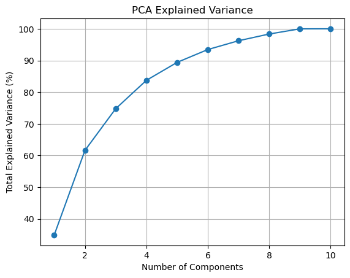
Next, we want to work to understand how each original feature in our dataset contributed to our principal components. We can do this with the use of a biplot. A biplot is a scatter plot of our data points that are projected into the 2D space formed by PC1 and PC2, our two most informative eigenvectors. On this plot we then overlay the loadings of our original variables for these two components. The results can be seen in Figure 4. Average temperature, cooling degree days, and ozone concentrations contributed the most to PC1 whereas precipitation, our drought index, and our precipitation indexes contributed the most to PC2.
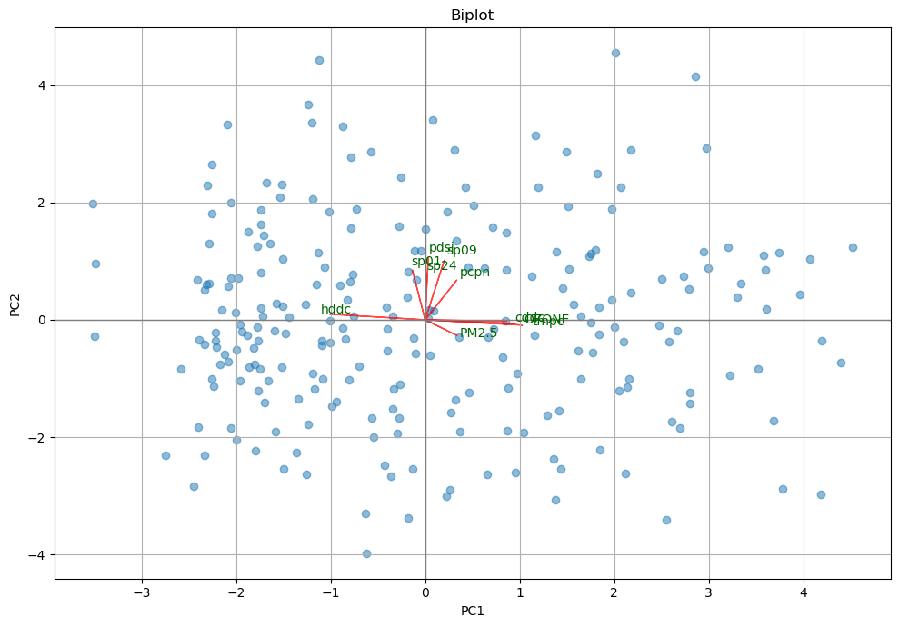Conclusions
Overall, I learned that I could safely reduce the number of features in my dataset from 10 to 7, if I wanted to use the pricipal components in further model analysis instead of my original feature values. Although this is ideal for reducing dimensionality, pricipal components can be hard to interpret since they are amalgamations of the original features. This could make model interpretation much more difficult. As other models are explored, interpretability will have to be weighed with preformance issues due to dimensionality so see which impact outweighs the other. From looking at the biplot, we can deduce that PC1 can be thought of as a temperature gradient, ranging from cold temperatures (negative) to hot temperatures (positive). PC2 can be interpreted as a hydrological or moisture gradient with positive values indicating higher precipitation or drought related conditions while lower values indicate less precipiation or absence of drought.
Clustering
Overview
Clustering is an unspervised machine learning technique that uses unlabeled data to discover groupings or patterns within a dataset. Unspervised means that the model does not have any target outputs that it is trained on like a regression model. It is not trying to predict a specific outcome or achieve a particular accuracy. Instead, the model is left to discover patterns on its own. The two clustering models that where utilized were K-Means clustering and Hierarchical Clustering.
K-Means clustering works by first setting locations for the centroids for each cluster. The k value specified determines the number of resulting clusters and therefore the number of centroids that are initially set. Then, the algorithm measures the distance from one point to each of the centroids. The distance measurement used for the K-Means clustering in this project was the Euclidean distance. The point is then assigned to cluster of the centroid that is the closetst. This happens for each point in the dataset. Once all points have been assigned, the centroids are recalculated so that they are moved to the center of the points that were assigned to their cluster. Then, the process happens again. The distance from a point to all the centroids is calculated. If a point is now closer to a different centroid it is reassigned to that cluster. All the points are rechecked and reassigned if necessary. Then the centroids are recalculated and adjusted. This process continues until no points are reassigned and the centroids do not need to be adjusted.
Hierarchical clustering works in a different manner. It takes all points in a dataset and assigns each point to its own cluster. It then calculates the distance between each pair of clusters and merges each cluster pair that has the smallest distance between them. It then recalculates the distance between all the new cluster pairs and again merges each cluster pair that has the smallest distance between them. This merging continues until you end up with one final cluster. This process allows us to see how our data is iteratively clustered so that we can pick an appropriate number of clusters for our data that will provide an appropriate amount of segmentation for analysis and interpretability.
These techniques will be used to discover multivariate interactions within our dataset, which includes climate and air quality data for the state of Colorado. In Figure 1 below, the visualization of K-Means clustering gives an example of the clustering that will occur. This figure is a 2-D representation, however the dataset to be clustered will contain 10 different variables, so it will not be possible to visualize the data in this hyperdimensional space. Figure 2 below is an example of a Dendrogram. This visualization shows the agglomerative clustering process of the hierarchical clustering technique in visual form. On the x-axis is each individual point. The lines then show how the points and clusters were merged together to get larger and larger clusters.

Data Prep
As mentioned above, clustering techniques need unlabeled data. This is because the technique uses distance to determine similarity in order to group like points together. Therefore, in order to prepare our data for the model we needed to strip out any identifying columns. Additionally, clustering models only work with numerical data. This is because the basis of the methods is distance between points. Therefore the points need to be represented as numbers for this technique to work. Lastly, the data needed to be scaled in some manner. If different features of the data have different scales, the features with the larger scales will exert more influence on the results since distance measurements are being used. To avoid this, we scale the data so that each feature can be considered equally. For our data, we used normalization scaling. This gives each feature a mean of 0 and a standard deviation of 1. For this model we chose to consider ten different features; Average Temperature (tmpc), Precipitation (pcpn), Palmer Drought Severity Index (pdsi), Standardized Precipitation Index (SP) for 1-month, 9-month, and 24-month, Cooling Degree Days (cddc), Heating Degree Days (hddc), Fine Particulate Matter levels (PM 2.5), and Ozone levels (OZONE). Figure 3 below shows the results of our final prepared data with all ten features with the values normalized. The data can be found here. All of the code for this model can be found here. The title of the codebook is 'Clustering'.
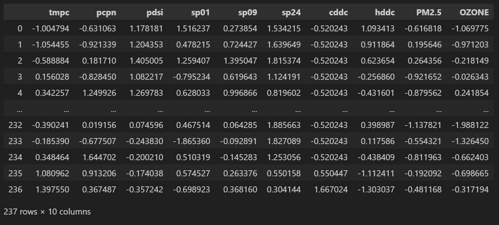Results
K-Means clustering was the first model employed with the data. The silhouette method was used to determine the optimal value for k, which is the number of clusters to be produced by the model. Figure 4 below shows the silhouette plot, which demonstrates that the optimal number of clusters for our data was 2.

Using this value for k, the data was fed back into the model and the resulting cluster assignments were mapped back onto our original dataframe. This dataframe was then segmented so that each month was assigned a season. This allowed for seasonal interpretation of the cluster assignment over time. The results can be seen below in Figure 5.
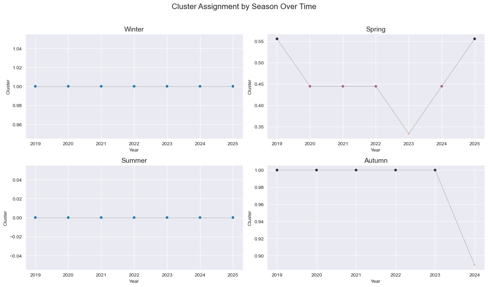Next, a hierarchical clustering model was used with the data to see if differing results would be obtained. The same pre-prepared data from above was used for this model as well. The model was run and Figure 6 below shows the resulting dendrogram.
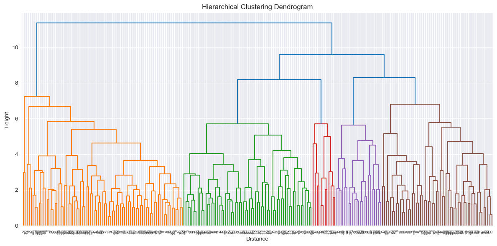As can be seen from the dendrogram, the recomended number of clusters for our data was 5. This was very different than the number of clusters recommended by the silhouette plot for our k-means clustering model. The hierarchical clustering model was run with specifying 5 clusters and the resultant cluster assignments were mapped back onto our original dataframe. This data was also segmented by season. Figure 7 below shows the cluster assignment over time for each season.
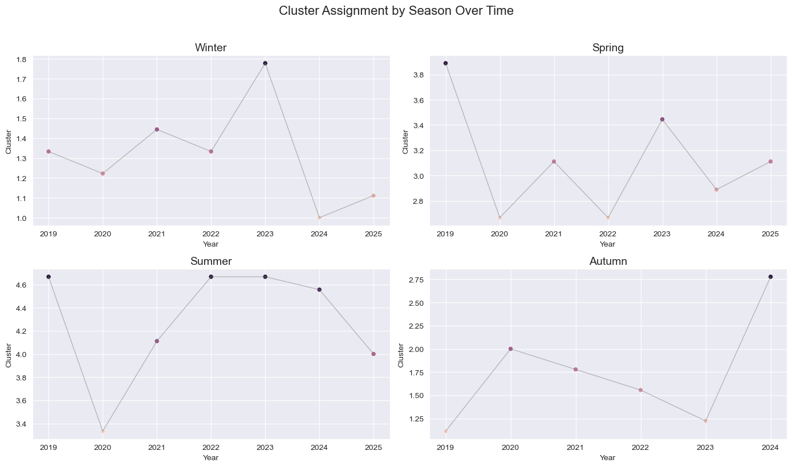Conclusions
From these results we were able to draw several conclusions. For K-Means clustering, the model was able to identify two distinct climate and air quality patterns. Upon analysis of the data within each cluster we were able to determine that Cluster 0 represented a climate regime that was significantly warmer than average, experienced slightly more precipitation, had a high cooling demand and a low heating demand, and had significantly elevated ozone levels. Cluster 1 represented a climate regime that was cooler than average, slightly drier than average, had high heating demand, and low particulate and ozone levels. From the graphs in Figure 5 we can see that Cluster 0 more closely aligned with Summer and Spring and Cluster 1 more closely aligned with Winter and Autumn. Although winter and summer did not appear to vary much in cluster assignment, some interesting results can be observed for Spring and Autumn. For Spring it appears as though the cluster assigment has been shifting from summer like to winter like between 2023 and 2025. This could be suggesting that colder winter temperatures are lingering longer. For Autumn, we can see a slight dip towards Cluster 0 from 2024 to 2025. Although the change is slight, it could indicate the possible starting of a shift towards warmer weather during Autumn.
For hierarchical clustering, the results were more interesting because there were 5 clusters in total instead of just 2. The characteristics of each cluster were: Cluster 1: cool, moderately dry, low air pollution; Cluster 2: moderate temperature, dry, low to moderate air pollution; Cluster 3: hot, dry, significant air pollution; Cluster 4: temperate, wet, moderate air pollution; and Cluster 5: hot, humid, and high ozone but low particulate pollution. From these definitions we can see that the seasons do not directly align with a particular cluster, which gives us a more granular analysis for how climate and air quality conditions are changing over time by season. Figure 7 below shows the breakdown of the prevalence of each cluster for each year, by season. This combined with Figure 6 above allows us to draw a few conclusions. Winter tended towards Cluster 1, while Summer tended towards Cluster 5. Autumn tended towards Cluster 1 or 2, with not much variation outside of those two. Spring, however, varied considerably between cluster assignments depending on the year. These results could indicate that climate and air quality impacts are cause the most variability with Spring conditions and this is where more of the changes are going to be felt.
Naive Bayes
Using probabilistic classifiers for text and numeric data.
Decision Trees
Entropy, Information Gain, and building decision trees.
Support Vector Machines (SVMs)
Kernel methods, margin maximization, and classification.
Regression
Linear and logistic regression analysis.
Neural Networks (NN)
Architecture, backpropagation, and training deep models.
Conclusions
Summary of findings and reflections on the course and project.
About the Author

Sean Fitzgerald Sean was commissioned as an officer in the United States Army in May 2013. Since then, he has held numerous leadership and staff positions from the tactical to organizational level. Sean spent 4 years as an Infantry Officer and 7 years as a Military Intelligence Officer. In 2024, Sean reclassified as an Operations Research and Systems Analysis Officer. As part of this transition, Sean has enrolled in the Master's of Data Science program at University of Colorado, Boulder with an anticipated graduation date of May 2026.